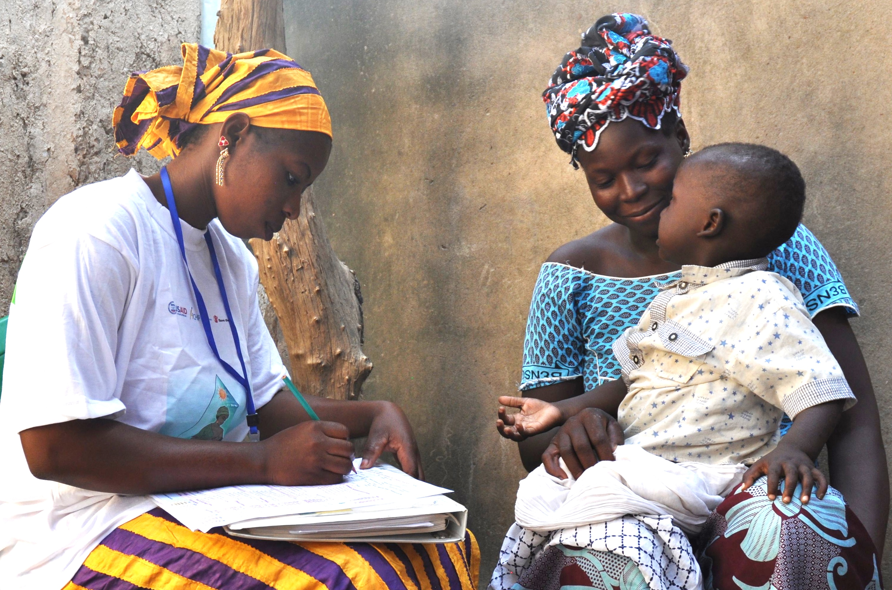
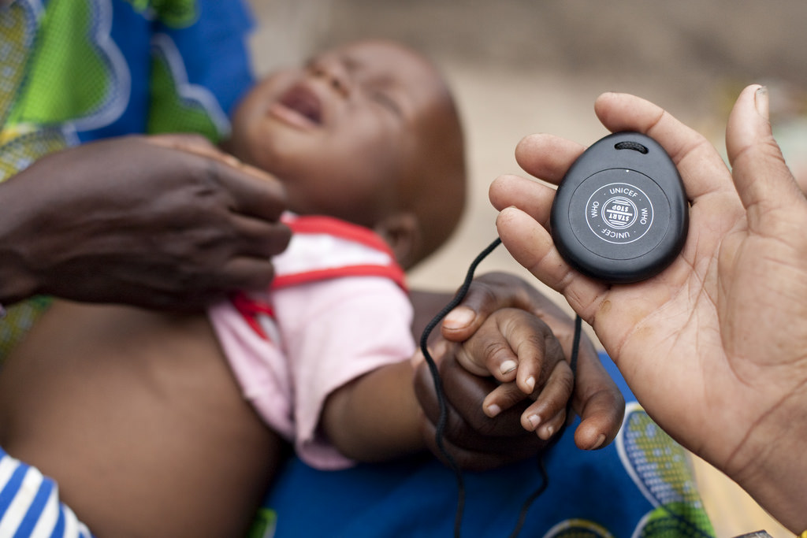

The Ashesi-Dartmouth Engineering Project (ADEPT) is a new learning program being offered by the Thayer School of Engineering, in collaboration with Ashesi University of Ghana, West Africa. The program will offer Dartmouth undergraduates an engaging, hands-on learning experience in developing solutions to real-world problems. It is targeted at students who are excited about working as part of a geographically-distributed team at the intersection of engineering, global health, and human centered design.
In addition to exposure to real, global-scale engineering challenges, participation in ADEPT will provide students with an immersive lesson in cross-cultural communication, a critical skill in today’s globalized engineering workforce.

Three Dartmouth students and three Ashesi students will be selected to join the ADEPT Team for a 10-week summer internship, working closely with Dartmouth and Ashesi faculty. Team members will conduct brainstorming sessions, observational studies, expert interviews and secondary research. Over the 10-week period, the Team will also perform several iterations of engineering solution design, prototyping, usability testing, analysis and redesign. The goal will be to produce a complete solution (along with technical documentation that describes computer code, circuit designs, 3D drawings, etc. of all relevant artifacts) to a real-world problem.
For the 2017 pilot project, the ADEPT Team will develop a solution to aid in the diagnosis of pneumonia by health-workers in low-resource settings.
Pneumonia is the single deadliest infectious disease of children under age 5. Early detection and treatment of pneumonia is critical to saving lives, but standard imaging and laboratory testing facilities are often not an option in low-resource settings.
To address this problem, UNICEF and WHO have recommended that community health workers diagnose pneumonia based on the presence of clinical symptoms: cough, fever, and elevated respiratory rate. Unfortunately, these diagnoses are highly subjective, leaving some pneumonia sufferers untreated, while other children are unnecessarily placed on a course of medication.
We propose to apply design thinking and engineering tools to develop a solution that provides community health workers with an objective assessment of the clinical symptoms of pneumonia.

Who is eligible to apply?
To be eligible for the program, Dartmouth students must be
in active status and in good academic and disciplinary standing.
May I take classes while participating in the program?
No, the demands of coursework would diminish your contribution to the
project.
Is the summer internship a full-time position?
Yes, this is a full-time position with regular working hours
during the week.
Does the program involve international travel?
No, there will be no international travel this year.
How long is the program?
The program runs for ten (10) weeks and will begin early- to mid-June.
Is housing provided?
No, participants must make their own arrangements for
accomodation.
When will you be conducting interviews?
Final candidates will be interviewed in late April. We will
interview off-campus applicants via phone or video conference.
When will offers be made?
We will make offers by May 1.
What is the stipend?
The stipend is $5,000.